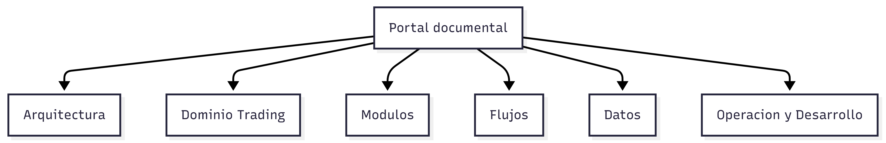

Arquitectura
Vista estructural de la plataforma.
Abrir seccionPortal Tecnico
Documentacion estatica, navegable y preparada para crecer por capas: arquitectura, dominio, modulos, datos, operacion y desarrollo.
Resumen ejecutivo
Todas las areas obligatorias existen desde el inicio y mantienen metadatos visibles para actualizaciones incrementales futuras.
Nota editorial
La ruta canonica prevista para publicar esta documentacion es /docs/docs-html/.
El arbol auditado y mantenido en este workspace sigue estando en /docs-html/. Mientras no se alinee la publicacion fisica, esta diferencia debe considerarse un hueco conocido de empaquetado y no de cobertura documental.
Mapa de navegacion
La portada ya no muestra un Mermaid generico. Usa la imagen adjunta como vista principal del portal y deja el mapa visual listo para futuras iteraciones.

Vista estructural de la plataforma.
Abrir seccionConceptos centrales del dominio.
Abrir seccionVista por modulos funcionales.
Abrir seccionSecuencias operativas y funcionales.
Abrir seccionCatalogo y contratos de datos.
Abrir seccionInvestigacion, simulacion y promocion.
Abrir seccionOperacion diaria, incidentes y releases.
Abrir seccionIncorporacion, pruebas y estandares.
Abrir seccionControles de seguridad y gobierno.
Abrir seccionIndice de decisiones arquitectonicas.
Abrir seccionVista consolidada del vocabulario.
Abrir seccionPreguntas frecuentes.
Abrir seccionRegistro de incidentes y aprendizajes.
Abrir seccionPlantillas para ampliar la documentacion.
Abrir seccionBase documental navegable, profesional e incremental para entender y evolucionar la plataforma.